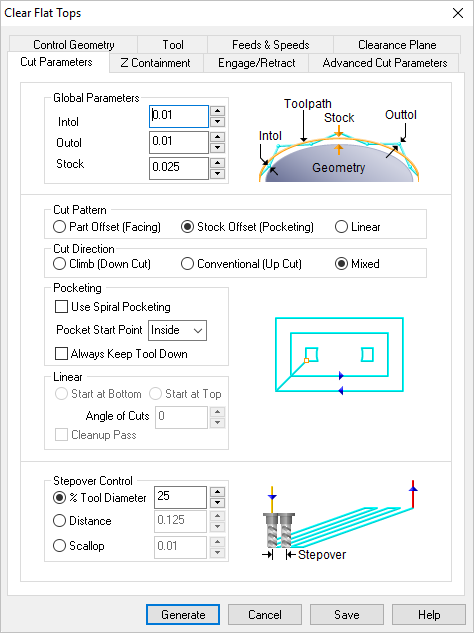
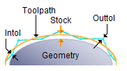
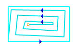

The following Cut Parameters tab allows you to define the cut parameters for the current Clear Flats operation. You can set Global Parameters, Cut Control and the Stepover Control via this tab of the operation dialog. The Global Parameters section allows you to set the tolerance value to be used in machining. A uniform thickness or stock that needs to be left around the part can also be specified here. Refer to each option below.
 Dialog Box: Cut Parameters tab, Projection Pocketing, 3/4 Axis |
 Global Parameters, 3 Axis Operations The Global Parameters section allows you to set the tolerance value to be used in machining. Intol and Outol are allowable deviations (tolerances) from the actual part geometry plus the Stock layer (if any). A uniform thickness or stock that needs to be left around the part can be specified here. Intol / Outol
Stock |
This section allows you to define the type of cut pattern that the tool will follow when it is at each Z level. Depending on the operation being used, one or more of these patterns are available for selection in the dialog. 2D Offset is a 2D offset facing pattern. The cut regions are successively offset until there is nothing left to machine. This type of cutting is sometimes called spiral machining. Stock Offset is a pocketing pattern derived from the stock geometry. Linear creates a straight linear pattern regardless of part or stock geometry. In each Offset cut type, you can specify the cut start point to be either the Inside of the cut regions or from the Outside.
|
This can be controlled by specifying either Climb (Down Cut), Conventional (Up Cut) or Mixed.
|
Check this box to use a spiral cut pattern for pocketing.  Spiral Pocketing |
Pocket Start Point can be set to inside or outside. This is applicable for Part offset and Stock Offset cut patterns.
|
When checked, the system tries, when possible, to keep the cutter in contact with the cut level plane while connecting all areas within a single machining region. Otherwise the cutter will retract and re-engage. |
The Linear controls are only enabled when Cut Pattern (see above) is set to Linear. Select from the following: Start at Top / Start at Bottom Angle of Cuts Cleanup Pass
|
 Stepover Control, 3 Axis Operations This allows you to define the spacing between the cuts. Select from the following options: % Tool Diameter Distance Scallop (not available for all operations) |